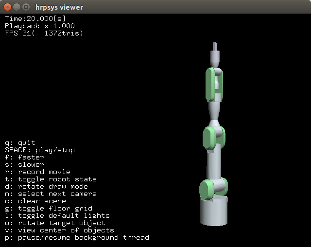

最初のシミュレーションの実行¶
hrpsys-simulatorコマンド¶
hrpsys-simulatorコマンドはシミュレーションをロードし実行します。以下のように使います:
$ hrpsys-simulator [project file] [options]
プロジェクトファイル はシミュレーション世界を定義するXML形式のファイルです（あとで説明します）。
hrpsys-simulatorコマンドには以下のオプションがあります:
-
-nodisplay¶ ヘッドレスモード
-
-realtime¶ 実時間への同期
-
-usebbox¶ 干渉チェックに外接四角形を使う
-
-endless¶ エンドレスモード
-
-showsensors¶ 画面上でセンサを視覚化する
-
-size[pixels]¶ ウィンドウの大きさを設定する
-
-no-default-lights¶ 環境光を無効にする
-
-max-edge-length[value]¶ ボリゴンの最大長を設定する（この最大長より大きなポリゴンは自動で分割され陰影などの表示品質を改善することができます）
-
-max-log-length[value]¶ ログの最大長を設定する
-
-exit-on-finish¶ シミュレーションが終了したらプログラムを終了する
-
-record¶ シミュレーションを動画で保存する
-
-bg[r] [g] [b]¶ 背景色を設定する
-
-h--help¶ ヘルプを表示する
サンプルプロジェクトを起動する¶
シミュレータを実行する前にopenhrp-model-loaderが実行されている必要があります。以下のコマンドでモデルローダを実行してください:
$ openhrp-model-loader
以下のコマンドを入力してPA10シミュレーションを実行してください:
$ hrpsys-simulator `pkg-config --variable=prefix hrpsys-base`/share/hrpsys/samples/PA10/PA10simulation.xml
シミュレーション画面の操作¶
左クリックとドラッグ でシミュレーション世界を回転させることができます。
右クリックとドラッグ でシミュレーション世界を平行移動できます。
マウスホイール でズームイン・ズームアウトできます。
シミュレーションウィンドウで”h”キーを押す ことでその他のコマンドを確認してください。
シミュレーションウィンドウで”q”キーを押す ことでシミュレーションを終了します。
